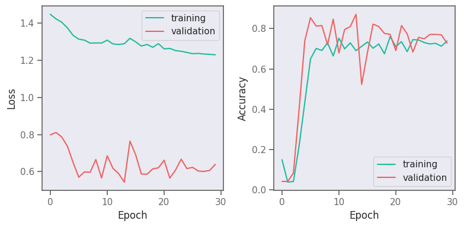
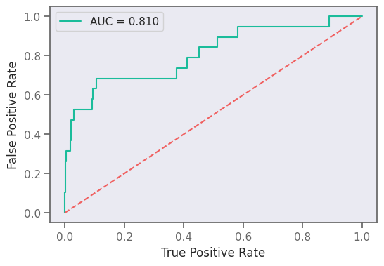
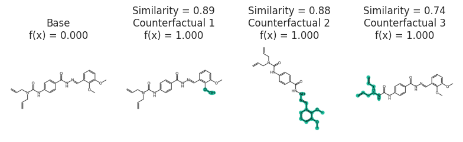
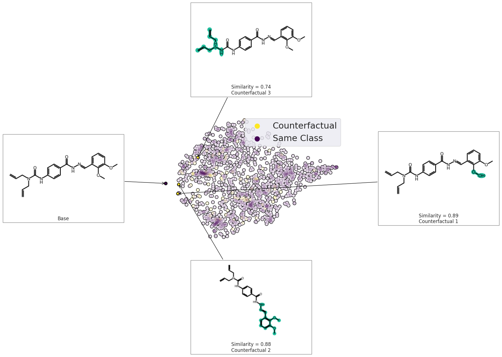
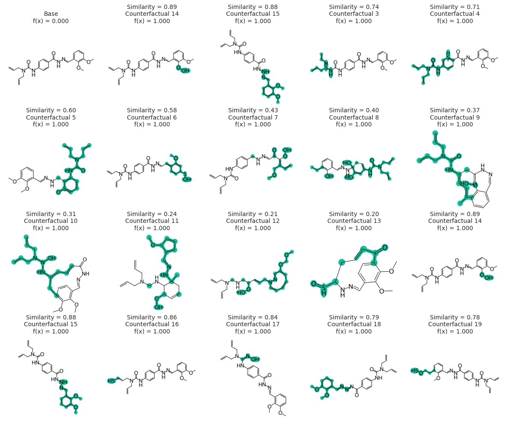
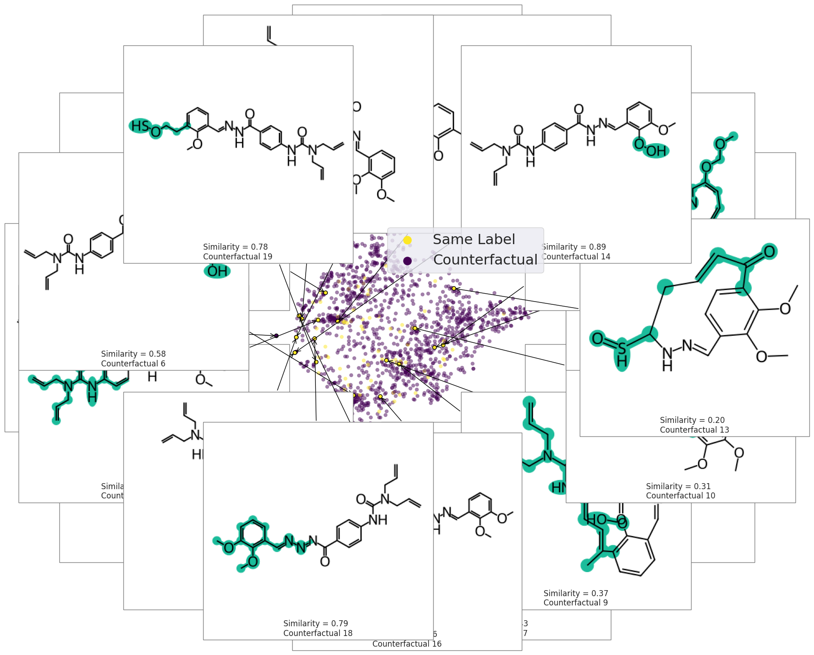

MMACE Paper: Graph Neural Network for HIV Inhibition
Show code cell source
# import os
# os.environ["CUDA_VISIBLE_DEVICES"] = "2"
import pandas as pd
import matplotlib.pyplot as plt
import seaborn as sns
import matplotlib as mpl
import numpy as np
import tensorflow as tf
import selfies as sf
import exmol
import skunk
import warnings
from rdkit import Chem
from rdkit.Chem.Draw import rdDepictor
rdDepictor.SetPreferCoordGen(True)
from rdkit.Chem.Draw import IPythonConsole
IPythonConsole.ipython_useSVG = True
sns.set_context("notebook")
sns.set_style(
"dark",
{
"xtick.bottom": True,
"ytick.left": True,
"xtick.color": "#666666",
"ytick.color": "#666666",
"axes.edgecolor": "#666666",
"axes.linewidth": 0.8,
"figure.dpi": 300,
},
)
color_cycle = ["#1BBC9B", "#F06060", "#F3B562", "#6e5687", "#5C4B51"]
mpl.rcParams["axes.prop_cycle"] = mpl.cycler(color=color_cycle)
np.random.seed(0)
2022-12-07 21:11:45.445605: I tensorflow/core/platform/cpu_feature_guard.cc:193] This TensorFlow binary is optimized with oneAPI Deep Neural Network Library (oneDNN) to use the following CPU instructions in performance-critical operations: AVX2 FMA
To enable them in other operations, rebuild TensorFlow with the appropriate compiler flags.
2022-12-07 21:11:45.604833: W tensorflow/compiler/xla/stream_executor/platform/default/dso_loader.cc:64] Could not load dynamic library 'libcudart.so.11.0'; dlerror: libcudart.so.11.0: cannot open shared object file: No such file or directory; LD_LIBRARY_PATH: /opt/hostedtoolcache/Python/3.8.15/x64/lib
2022-12-07 21:11:45.604862: I tensorflow/compiler/xla/stream_executor/cuda/cudart_stub.cc:29] Ignore above cudart dlerror if you do not have a GPU set up on your machine.
2022-12-07 21:11:46.668481: W tensorflow/compiler/xla/stream_executor/platform/default/dso_loader.cc:64] Could not load dynamic library 'libnvinfer.so.7'; dlerror: libnvinfer.so.7: cannot open shared object file: No such file or directory; LD_LIBRARY_PATH: /opt/hostedtoolcache/Python/3.8.15/x64/lib
2022-12-07 21:11:46.668641: W tensorflow/compiler/xla/stream_executor/platform/default/dso_loader.cc:64] Could not load dynamic library 'libnvinfer_plugin.so.7'; dlerror: libnvinfer_plugin.so.7: cannot open shared object file: No such file or directory; LD_LIBRARY_PATH: /opt/hostedtoolcache/Python/3.8.15/x64/lib
2022-12-07 21:11:46.668655: W tensorflow/compiler/tf2tensorrt/utils/py_utils.cc:38] TF-TRT Warning: Cannot dlopen some TensorRT libraries. If you would like to use Nvidia GPU with TensorRT, please make sure the missing libraries mentioned above are installed properly.
# shuffle rows and sample fom HIV dataset
hivdata = pd.read_csv("HIV.csv")
# REDUCED Data FOR CI
hivdata = hivdata.sample(frac=0.1).reset_index(drop=True)
hivdata.head()
| smiles | activity | HIV_active | |
|---|---|---|---|
| 0 | COc1ccc2c(c1)OCC1(C)c3cc(O)c(OCc4ccccc4)cc3OC21 | CI | 0 |
| 1 | Cc1cc(-c2ccc(Cl)cc2)c(C#N)c(=S)n1C1OC(CO)C(O)C... | CI | 0 |
| 2 | CNn1c(-c2ccccc2)n[nH]c1=O | CM | 1 |
| 3 | O=NN(CCCl)C(=O)NC1CCCCC1 | CI | 0 |
| 4 | C=C1CCC(C)(c2ccc(CO)cc2)C1C | CI | 0 |
def gen_smiles2graph(sml):
"""Argument for the RD2NX function should be a valid SMILES sequence
returns: the graph
"""
m, smi_canon, status = exmol.stoned.sanitize_smiles(sml)
# m = Chem.MolFromSmiles(smi_canon)
m = Chem.AddHs(m)
order_string = {
Chem.rdchem.BondType.SINGLE: 1,
Chem.rdchem.BondType.DOUBLE: 2,
Chem.rdchem.BondType.TRIPLE: 3,
Chem.rdchem.BondType.AROMATIC: 4,
}
N = len(list(m.GetAtoms()))
# nodes = np.zeros((N,100))
nodes = np.zeros((440, 100))
for i in m.GetAtoms():
nodes[i.GetIdx(), i.GetAtomicNum()] = 1
# adj = np.zeros((N,N))
adj = np.zeros((440, 440))
for j in m.GetBonds():
u = min(j.GetBeginAtomIdx(), j.GetEndAtomIdx())
v = max(j.GetBeginAtomIdx(), j.GetEndAtomIdx())
order = j.GetBondType()
if order in order_string:
order = order_string[order]
else:
raise Warning("Ignoring bond order" + order)
adj[u, v] = 1
adj[v, u] = 1
adj += np.eye(440)
return nodes, adj
class GCNLayer(tf.keras.layers.Layer):
"""Implementation of GCN as layer"""
def __init__(self, activation=None, **kwargs):
# constructor, which just calls super constructor
# and turns requested activation into a callable function
super(GCNLayer, self).__init__(**kwargs)
self.activation = tf.keras.activations.get(activation)
def build(self, input_shape):
# create trainable weights
node_shape, adj_shape = input_shape
self.w = self.add_weight(shape=(node_shape[2], node_shape[2]), name="w")
def call(self, inputs):
# split input into nodes, adj
nodes, adj = inputs
# compute degree
degree = tf.reduce_sum(adj, axis=-1)
# GCN equation
new_nodes = tf.einsum("bi,bij,bjk,kl->bil", 1 / degree, adj, nodes, self.w)
out = self.activation(new_nodes)
return out, adj
class GRLayer(tf.keras.layers.Layer):
"""Reduction layer: A GNN layer that computes average over all node features"""
def __init__(self, name="GRLayer", **kwargs):
super(GRLayer, self).__init__(name=name, **kwargs)
def call(self, inputs):
nodes, adj = inputs
reduction = tf.reduce_mean(nodes, axis=1)
return reduction
ninput = tf.keras.Input(
(
None,
100,
)
)
ainput = tf.keras.Input(
(
None,
None,
)
)
# GCN block
x = GCNLayer("relu")([ninput, ainput])
x = GCNLayer("relu")(x)
x = GCNLayer("relu")(x)
x = GCNLayer("relu")(x)
# reduce to graph features
x = GRLayer()(x)
# standard layers
x = tf.keras.layers.Dense(256)(x)
x = tf.keras.layers.Dense(1, activation="sigmoid")(x)
gcnmodel = tf.keras.Model(inputs=(ninput, ainput), outputs=x)
gcnmodel.compile(
"adam",
loss=tf.keras.losses.BinaryCrossentropy(from_logits=False),
metrics=["accuracy"],
)
gcnmodel.summary()
2022-12-07 21:11:48.042919: W tensorflow/compiler/xla/stream_executor/platform/default/dso_loader.cc:64] Could not load dynamic library 'libcuda.so.1'; dlerror: libcuda.so.1: cannot open shared object file: No such file or directory; LD_LIBRARY_PATH: /opt/hostedtoolcache/Python/3.8.15/x64/lib
2022-12-07 21:11:48.042962: W tensorflow/compiler/xla/stream_executor/cuda/cuda_driver.cc:265] failed call to cuInit: UNKNOWN ERROR (303)
2022-12-07 21:11:48.042994: I tensorflow/compiler/xla/stream_executor/cuda/cuda_diagnostics.cc:156] kernel driver does not appear to be running on this host (fv-az210-556): /proc/driver/nvidia/version does not exist
2022-12-07 21:11:48.043236: I tensorflow/core/platform/cpu_feature_guard.cc:193] This TensorFlow binary is optimized with oneAPI Deep Neural Network Library (oneDNN) to use the following CPU instructions in performance-critical operations: AVX2 FMA
To enable them in other operations, rebuild TensorFlow with the appropriate compiler flags.
Model: "model"
__________________________________________________________________________________________________
Layer (type) Output Shape Param # Connected to
==================================================================================================
input_1 (InputLayer) [(None, None, 100)] 0 []
input_2 (InputLayer) [(None, None, None) 0 []
]
gcn_layer (GCNLayer) ((None, None, 100), 10000 ['input_1[0][0]',
(None, None, None) 'input_2[0][0]']
)
gcn_layer_1 (GCNLayer) ((None, None, 100), 10000 ['gcn_layer[0][0]',
(None, None, None) 'gcn_layer[0][1]']
)
gcn_layer_2 (GCNLayer) ((None, None, 100), 10000 ['gcn_layer_1[0][0]',
(None, None, None) 'gcn_layer_1[0][1]']
)
gcn_layer_3 (GCNLayer) ((None, None, 100), 10000 ['gcn_layer_2[0][0]',
(None, None, None) 'gcn_layer_2[0][1]']
)
GRLayer (GRLayer) (None, 100) 0 ['gcn_layer_3[0][0]',
'gcn_layer_3[0][1]']
dense (Dense) (None, 256) 25856 ['GRLayer[0][0]']
dense_1 (Dense) (None, 1) 257 ['dense[0][0]']
==================================================================================================
Total params: 66,113
Trainable params: 66,113
Non-trainable params: 0
__________________________________________________________________________________________________
def gen_data():
for i in range(len(hivdata)):
graph = gen_smiles2graph(hivdata.smiles[i])
activity = hivdata.HIV_active[i]
yield graph, activity
data = tf.data.Dataset.from_generator(
gen_data,
output_types=((tf.float32, tf.float32), tf.float32),
output_shapes=(
(tf.TensorShape([None, 100]), tf.TensorShape([None, None])),
tf.TensorShape([]),
),
)
N = len(hivdata)
split = int(0.1 * N)
test_data = data.take(split)
nontest = data.skip(split)
val_data, train_data = nontest.take(split), nontest.skip(split).shuffle(1000)
class_weight = {0: 1.0, 1: 30.0} # to account for class imbalance
result = gcnmodel.fit(
train_data.batch(128),
validation_data=val_data.batch(128),
epochs=30,
verbose=0,
class_weight=class_weight,
)
fig, (ax1, ax2) = plt.subplots(1, 2, figsize=(8, 4))
ax1.plot(result.history["loss"], label="training")
ax1.plot(result.history["val_loss"], label="validation")
ax1.legend()
ax1.set_xlabel("Epoch")
ax1.set_ylabel("Loss")
ax2.plot(result.history["accuracy"], label="training")
ax2.plot(result.history["val_accuracy"], label="validation")
ax2.legend()
ax2.set_xlabel("Epoch")
ax2.set_ylabel("Accuracy")
fig.tight_layout()
fig.savefig("gnn-loss-acc.png", dpi=180)
fig.show()

from sklearn.metrics import roc_curve
from sklearn.metrics import auc
prediction = []
test_y = []
for x, y in test_data.as_numpy_iterator():
yhat = gcnmodel((x[0][np.newaxis, ...], x[1][np.newaxis, ...]))
prediction.append(yhat.numpy())
test_y.append(y)
prediction = np.array(prediction).flatten()
test_y = np.array(test_y)
fpr_keras, tpr_keras, thresholds_keras = roc_curve(test_y, prediction)
auc_keras = auc(fpr_keras, tpr_keras)
plt.figure(figsize=(6, 4), dpi=100)
plt.plot(fpr_keras, tpr_keras, label="AUC = {:.3f}".format(auc_keras))
plt.plot([0, 1], [0, 1], linestyle="--")
plt.xlabel("True Positive Rate")
plt.ylabel("False Positive Rate")
plt.legend()
plt.savefig("gnn-roc.png", dpi=300)
plt.show()

CF explanation
The following example find CFs for a given molecule where the HIV activity is zero.
def predictor_function(smiles, selfies):
# print('inut:',smiles)
labels = []
for sml in smiles:
nodes, adj_mat = gen_smiles2graph(sml)
pred = gcnmodel((nodes[np.newaxis, ...], adj_mat[np.newaxis, ...])).numpy()
labels.append(pred)
labels = np.array(labels).flatten()
bin_labels = np.where(labels > 0.5, np.ones(len(labels)), np.zeros(len(labels)))
target_act = np.zeros(len(labels))
return abs(bin_labels - target_act).astype(bool)
basic = exmol.get_basic_alphabet()
stoned_kwargs = {"num_samples": 1500, "alphabet": basic, "max_mutations": 2}
example_base = "C=CCN(CC=C)C(=O)Nc1ccc(C(=O)NN=Cc2cccc(OC)c2OC)cc1"
space = exmol.sample_space(
example_base,
predictor_function,
stoned_kwargs={"num_samples": 1500, "alphabet": basic, "max_mutations": 2},
quiet=True,
)
exps = exmol.cf_explain(space)
fkw = {"figsize": (8, 6)}
mpl.rc("axes", titlesize=12)
exmol.plot_cf(exps, figure_kwargs=fkw, mol_size=(450, 400), nrows=1)
plt.savefig("gnn-simple.png", dpi=180)
svg = exmol.insert_svg(exps, mol_fontsize=16)
with open("gnn-simple.svg", "w") as f:
f.write(svg)

font = {"family": "normal", "weight": "normal", "size": 22}
exmol.plot_space(
space,
exps,
figure_kwargs=fkw,
mol_size=(300, 200),
offset=0,
cartoon=True,
rasterized=True,
)
plt.scatter([], [], label="Counterfactual", s=150, color=plt.get_cmap("viridis")(1.0))
plt.scatter([], [], label="Same Class", s=150, color=plt.get_cmap("viridis")(0.0))
plt.legend(fontsize=22)
plt.tight_layout()
svg = exmol.insert_svg(exps, mol_fontsize=16)
with open("gnn-space.svg", "w") as f:
f.write(svg)

exps = exmol.cf_explain(space, nmols=19)
fkw = {"figsize": (12, 10)}
mpl.rc("axes", titlesize=10)
exmol.plot_cf(
exps, figure_kwargs=fkw, mol_size=(450, 400), mol_fontsize=26, nrows=4, ncols=5
)
plt.savefig("gnn-simple-20.png", bbox_inches="tight", dpi=300)
svg = exmol.insert_svg(exps, mol_fontsize=14)
with open("gnn-simple-20.svg", "w") as f:
f.write(svg)

fkw = {"figsize": (8, 6)}
font = {"family": "normal", "weight": "normal", "size": 22}
exmol.plot_space(space, exps, figure_kwargs=fkw, mol_size=(350, 300), mol_fontsize=22)
plt.scatter([], [], label="Same Label", s=150, color=plt.get_cmap("viridis")(1.0))
plt.scatter([], [], label="Counterfactual", s=150, color=plt.get_cmap("viridis")(0.0))
plt.legend(fontsize=22)
plt.savefig("gnn-space.png", bbox_inches="tight", dpi=180)
